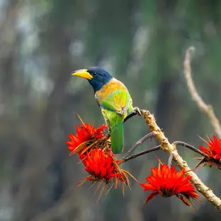

-

Name: Himalayan Monal
The national bird of Nepal, known for its dazzling plumage.
-
Name: Steppe Eagle
A migratory raptor often spotted soaring in the skies.
-
Name: Ruddy Shelduck
Found near lakes and rivers, often in pairs.
-
Name: Black Kite
A scavenger bird commonly seen around urban and rural areas.
-
Name: Olive-backed Pipit
A subtle but active bird found in forests and grasslands.
-

Name: Great Barbet
Recognized for its loud, repetitive call.
-

Name: White-capped Redstart
A striking bird found near rivers and streams.
-

Name: Barn Swallow
A migratory species seen in open fields and near water bodies.
-
Name: Grey Wagtail
Frequently spotted along riverbanks.
-
Name: Oriental Turtle Dove
A peaceful, soft-cooing dove found in woodlands.
-

Name: Verditer Flycatcher
A bright blue bird seen in forests and open areas.
-
Name: Eurasian Hoopoe
Easily recognized by its unique crest and curved beak.
-
Name: Common Kestrel
A small falcon hovering in search of prey.
-
Name: Long-tailed Shrike
A predatory songbird found in open landscapes.
-
Name: Brown Dipper
Seen near fast-flowing mountain streams.